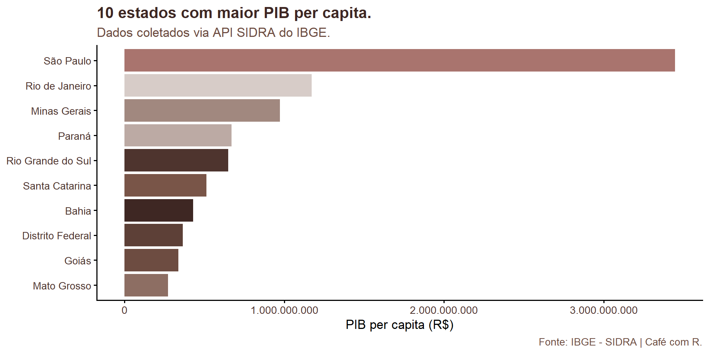

flowchart LR
A[rvest] --> E[Extração de HTML]
B[httr2] --> F[Requisições HTTP]
C[xml2] --> G[Parsing de XML/HTML]
D[polite] --> H[Scraping ético]
I[dplyr + stringr] --> J[Limpeza e organização]
Aula 11. Web scraping com pacote rvest
Coletando dados do IBGE diretamente no R
Democratização
Use, compartilhe, a aula está no github dentro do meu site.

Aproveitem muito!!! Ahhh essa é a meguy, minha gatinha linda, ela está na logo do café com R!
Códigos dos slides
Todos os códigos da aula estão funcionais. Prontos para reproduzir.
Objetivos da apresentação
- Compreender o que é web scraping e como funciona
- Conhecer os principais pacotes envolvidos
- Inspecionar elementos HTML de uma página
- Extrair tabelas e dados do site do IBGE
- Organizar os dados com tidyverse
- Aplicar boas práticas e ética no processo
O que é web scraping?
Definição
Web scraping é o processo automatizado de extrair dados de páginas web.
- A página é requisitada via HTTP
- O HTML retornado é lido e interpretado
- Elementos específicos são selecionados
- Os dados são extraídos e organizados
Quando usar web scraping?
- Quando não existe uma API disponível
- Quando os dados estão em tabelas HTML públicas
- Quando a coleta manual seria inviável
- Quando o site permite coleta automatizada
Note
Antes de coletar dados, verifique sempre o arquivo robots.txt e os termos de uso do site.
Web scraping x API
| Característica | Web scraping | API |
|---|---|---|
| Estrutura dos dados | HTML não estruturado | JSON/XML estruturado |
| Estabilidade | Frágil (depende do layout) | Estável |
| Permissão | Verificar terms of use | Geralmente documentada |
| Facilidade | Média | Alta |
Pacotes essenciais
Visão geral dos pacotes
rvest
rvest
O pacote principal da aula. Desenvolvido pela Posit, faz parte do ecossistema tidyverse.
- Leitura de páginas HTML com
read_html() - Seleção de elementos com
html_element()ehtml_elements() - Extração de texto com
html_text2() - Extração de tabelas com
html_table() - Extração de atributos com
html_attr()
httr2
httr2
Responsável por fazer as requisições HTTP de forma controlada.
- Envio de headers personalizados
- Controle de tempo entre requisições
- Tratamento de erros e redirecionamentos
- Autenticação quando necessário
Dica
Em muitos casos simples, o rvest já faz a requisição internamente. O httr2 é útil para casos mais avançados.
xml2
Biblioteca de baixo nível que o rvest usa internamente.
- Parsing de documentos HTML e XML
- Navegação na árvore de nós
- Geralmente não é chamado diretamente
- Importante conhecer para entender erros
polite
polite
Pacote que garante um scraping respeitoso e ético.
- Verifica o
robots.txtautomaticamente - Identifica o script com um
user-agentdescritivo - Adiciona intervalos entre requisições (
crawl_delay) - Bloqueia coleta em páginas não permitidas
Warning
Usar o polite é uma boa prática. Scraping agressivo pode sobrecarregar servidores e resultar em bloqueio de IP.
Instalação dos pacotes
Entendendo o HTML
Estrutura básica de uma página
Seletores CSS - o que são?
Seletores CSS identificam elementos dentro do HTML.
| Seletor | O que seleciona |
|---|---|
h1 |
Todas as tags <h1> |
.descricao |
Elementos com class descricao |
#dados |
Elemento com id dados |
table td |
<td> dentro de <table> |
a[href] |
Links com atributo href |
Como inspecionar uma página
- Abra o site no navegador
- Clique com o botão direito no elemento desejado
- Selecione Inspecionar (ou
F12) - Identifique a tag, classe ou id do elemento
- Use esse seletor no seu código R
Dica
No Chrome e Firefox, a extensão SelectorGadget facilita muito a identificação de seletores CSS.
Primeira requisição com rvest
Lendo uma página HTML
library(rvest)
url <- "https://www.ibge.gov.br/cidades-e-estados.html"
pagina <- read_html(url)
pagina{html_document}
<html lang="pt-BR">
[1] <head>\n<meta name="viewport" content="width=device-width, initial-scale= ...
[2] <body>\r\n<!-- Google Tag Manager (noscript) -->\r\n<noscript><iframe src ...O objeto retornado é um documento HTML que pode ser navegado com os demais verbos do rvest.
Verificando o robots.txt com polite
library(polite)
sessao <- bow(
url = "https://www.ibge.gov.br",
user_agent = "Aula Web Scraping - Cafe com R / contato@exemplo.com"
)
sessao<polite session> https://www.ibge.gov.br
User-agent: Aula Web Scraping - Cafe com R / contato@exemplo.com
robots.txt: 57 rules are defined for 1 bots
Crawl delay: 5 sec
The path is scrapable for this user-agentO bow() verifica se a coleta é permitida e configura o intervalo de espera sugerido pelo servidor.
Coletando com polite
Note
O scrape() substitui o read_html() quando usamos o fluxo do polite. Ele respeita o crawl_delay automaticamente.
Extraindo tabelas do IBGE
Exemplo 1 - Tabela de municípios
O IBGE disponibiliza uma tabela pública com os códigos dos municípios brasileiros.
Selecionando e visualizando
Rows: 27
Columns: 2
$ UFs <chr> "Acre", "Alagoas", "Amapá", "Amazonas", "Bahia", "Ceará", "Dis…
$ Códigos <chr> "12ver municípios", "27ver municípios", "16ver municípios", "1…Por que não usar scraping aqui?
A página ibge.gov.br/cidades-e-estados.html carrega os dados via JavaScript dinâmico.
- O
read_html()captura apenas o HTML estático - Os tiles de estados são renderizados no navegador após o carregamento
- Seletores como
.tile__estadoretornam vazio porque o conteúdo não existe no HTML bruto
Note
Este é um caso real e muito comum no scraping. A solução correta é usar a API oficial do IBGE, que retorna os mesmos dados de forma estruturada.
Identificando conteúdo dinâmico
- Abra o DevTools do navegador (
F12) - Vá até a aba Network
- Filtre por Fetch/XHR
- Recarregue a página
- Você verá as chamadas de API que o site faz nos bastidores
Dica
Quando o html_elements() retorna um vetor vazio, suspeite de conteúdo dinâmico. O DevTools revela a API por trás da página.
Exemplo 2 - Estados via API do IBGE
A API oficial do IBGE
O IBGE disponibiliza uma API REST pública e gratuita.
- Endpoint:
servicodados.ibge.gov.br/api/v1/localidades/estados - Retorna JSON com nome, sigla, região e código de cada estado
- Não requer autenticação
- Dados sempre atualizados e estáveis
- Documentação: servicodados.ibge.gov.br/api/docs
Fazendo a requisição
O request() cria a requisição e req_perform() a executa.
Convertendo o JSON
O resp_body_string() extrai o conteúdo como texto e o fromJSON() converte para data frame automaticamente.
Organizando os dados
Contando estados por região
Visualizando por região
library(ggplot2)
estados <- estados |>
count(nome_regiao) |>
ggplot(aes(
x = reorder(nome_regiao, n),
y = n,
fill = nome_regiao)) +
geom_col(show.legend = FALSE) +
coord_flip() +
labs(
title = "Quantidade de estados por região.",
x = NULL,
y = "Número de estados",
caption = "Fonte: API IBGE Localidades | Café com R.") +
theme_classic(base_size = 13) +
theme(plot.title = element_text(face = "bold"))Limpeza e organização dos dados
Limpando nomes de colunas
Continuando com a tabela de municípios do Exemplo 1:
library(stringr)
tabela_limpa <- tabela_municipios |>
rename_with(~ str_to_lower(str_replace_all(., " ", "_"))) |>
mutate(across(where(is.character), str_squish))
glimpse(tabela_limpa)Rows: 27
Columns: 2
$ ufs <chr> "Acre", "Alagoas", "Amapá", "Amazonas", "Bahia", "Ceará", "Dis…
$ códigos <chr> "12ver municípios", "27ver municípios", "16ver municípios", "1…Removendo linhas desnecessárias
Separando informações combinadas
Quando uma coluna contém dois dados juntos, como "São Paulo - SP":
library(tidyr)
# Exemplo com vetor simulado para demonstração
exemplo <- tibble(
municipio_uf = c("São Paulo - SP", "Rio de Janeiro - RJ", "Belo Horizonte - MG"))
exemplo |>
separate(
col = municipio_uf,
into = c("municipio", "uf"),
sep = " - ",
extra = "merge")# A tibble: 3 × 2
municipio uf
<chr> <chr>
1 São Paulo SP
2 Rio de Janeiro RJ
3 Belo Horizonte MG Exemplo completo - PIB per capita por estado
Contexto
O IBGE disponibiliza dados de PIB per capita dos estados via API.
- Endpoint público sem autenticação
- Dados da tabela 5938 do SIDRA
- Usaremos o pacote
sidrarpara acessar diretamente - Alternativa robusta ao scraping de HTML
Instalando e carregando o sidrar
Note
O sidrar é o pacote oficial para acessar o banco de dados SIDRA do IBGE diretamente no R, sem precisar de scraping.
Coletando PIB per capita por estado
library(sidrar)
library(dplyr)
# Tabela 5938 — PIB per capita dos estados (último ano disponível)
pib_bruto <- get_sidra(
x = 5938,
variable = 37,
geo = "State",
period = "last")
glimpse(pib_bruto)Rows: 27
Columns: 11
$ `Nível Territorial (Código)` <chr> "3", "3", "3", "3", "3", "3", "3", "3"…
$ `Nível Territorial` <chr> "Unidade da Federação", "Unidade da Fe…
$ `Unidade de Medida (Código)` <chr> "40", "40", "40", "40", "40", "40", "4…
$ `Unidade de Medida` <chr> "Mil Reais", "Mil Reais", "Mil Reais",…
$ Valor <dbl> 76456179, 26291321, 161794976, 2512480…
$ `Unidade da Federação (Código)` <chr> "11", "12", "13", "14", "15", "16", "1…
$ `Unidade da Federação` <chr> "Rondônia", "Acre", "Amazonas", "Rorai…
$ `Ano (Código)` <chr> "2023", "2023", "2023", "2023", "2023"…
$ Ano <chr> "2023", "2023", "2023", "2023", "2023"…
$ `Variável (Código)` <chr> "37", "37", "37", "37", "37", "37", "3…
$ Variável <chr> "Produto Interno Bruto a preços corren…Limpando os dados
pib <- pib_bruto |>
select(
estado = `Unidade da Federação`,
pib_per_capita = Valor) |>
filter(!is.na(pib_per_capita)) |>
mutate(pib_per_capita = as.numeric(pib_per_capita)) |>
arrange(desc(pib_per_capita))
head(pib, 3) estado pib_per_capita
1 São Paulo 3444814033
2 Rio de Janeiro 1172871443
3 Minas Gerais 971977551Visualizando os 10 maiores PIBs per capita - continua
Paleta café com R
Gráfico completo
grafico_pib_completo <- grafico_pib +
scale_fill_manual(values = paleta_cafe) +
scale_y_continuous(
labels = scales::label_number(
big.mark = ".",
decimal.mark = ",")) +
labs(
title = "10 estados com maior PIB per capita.",
subtitle = "Dados coletados via API SIDRA do IBGE.",
x = NULL,
y = "PIB per capita (R$)",
caption = "Fonte: IBGE - SIDRA | Café com R.") +
theme_classic(base_size = 13) +
theme(
plot.title = element_text(face = "bold", color = "#3E2723"),
plot.subtitle = element_text(color = "#6D4C41"),
axis.text = element_text(color = "#4E342E"),
axis.title.y = element_text(color = "#3E2723"),
plot.caption = element_text(color = "#6D4C41"))Gráfico completo

Coletando múltiplas páginas
O desafio da paginação
Muitos sites organizam o conteúdo em várias páginas. Para coletar tudo, é preciso iterar sobre as URLs.
- Identificar o padrão de paginação na URL
- Criar um vetor com todas as URLs
- Iterar com
purrr::map()ou um loop - Combinar os resultados com
bind_rows()
Estrutura da iteração
library(purrr)
library(rvest)
# Função para extrair uma página
extrair_pagina <- function(url) {
Sys.sleep(1) # intervalo obrigatório entre requisições
read_html(url) |>
html_element("table") |>
html_table()
}
# Vetor de URLs com padrão de paginação
urls <- paste0(
"https://quotes.toscrape.com/page/",
1:5, "/")
# Iteração segura com possibly() para não parar em erros
resultado <- map(urls, possibly(extrair_pagina, NULL)) |>
compact() |>
bind_rows()Warning
Sempre inclua Sys.sleep() entre requisições. O possibly() evita que um erro em uma página quebre toda a coleta.
Boas práticas e ética
Antes de coletar
- Leia os termos de uso do site
- Verifique o arquivo
robots.txt(site.com/robots.txt) - Prefira APIs oficiais quando disponíveis
- Identifique seu script com um
user-agentdescritivo
Durante a coleta
- Use
Sys.sleep()entre requisições - Nunca faça requisições em paralelo sem controle
- Armazene os dados localmente para não coletar repetidamente
- Monitore o volume de requisições
Aspectos legais
- Dados públicos não significam dados de uso livre
- Verifique a licença dos dados (Creative Commons, por exemplo)
- O IBGE disponibiliza dados sob licença aberta - mas cite a fonte
- Nunca colete dados pessoais sem autorização
Note
O IBGE possui uma API oficial (SIDRA e IBGE API) que deve ser preferida ao scraping direto sempre que os dados estiverem disponíveis por lá.
API do IBGE - quando usá-la
library(sidrar)
# Exemplo: população estimada por estado
populacao <- get_sidra(
x = 6579,
variable = 9324,
geo = "State",
period = "last")
populacao |>
select(
estado = `Unidade da Federação`,
pop = Valor) |>
arrange(desc(pop)) |>
head(10) estado pop
1 São Paulo 46081801
2 Minas Gerais 21393441
3 Rio de Janeiro 17223547
4 Bahia 14870907
5 Paraná 11890517
6 Rio Grande do Sul 11233263
7 Pernambuco 9562007
8 Ceará 9268836
9 Pará 8711196
10 Santa Catarina 8187029Fluxo completo - resumo
Pipeline de web scraping
- Identificar a URL
- Verificar o arquivo robots.txt
- Avaliar se o conteúdo é estático ou dinâmico
- Se for estático: utilizar read_html + rvest
- Se for dinâmico: buscar API ou endpoint XHR
Pipeline de web scraping
- Para HTML estático: extrair com html_elements + html_table
- Para dados via API: utilizar httr2 + jsonlite
- Limpar e organizar os dados com dplyr e stringr
- Analisar e visualizar os dados
Funções mais usadas
| Função | Pacote | Para que serve |
|---|---|---|
read_html() |
rvest | Ler página HTML |
html_elements() |
rvest | Selecionar múltiplos elementos |
html_element() |
rvest | Selecionar um elemento |
html_text2() |
rvest | Extrair texto |
html_table() |
rvest | Extrair tabela |
Funções mais usadas
| Função | Pacote | Para que serve |
|---|---|---|
html_attr() |
rvest | Extrair atributo |
bow() / scrape() |
polite | Scraping ético |
request() |
httr2 | Requisição HTTP |
fromJSON() |
jsonlite | Converter JSON para data frame |
Recursos adicionais
Documentação e referências
- rvest: rvest.tidyverse.org
- polite: dmi3kno.github.io/polite
- httr2: httr2.r-lib.org
- IBGE API: servicodados.ibge.gov.br/api/docs
- SIDRA: sidra.ibge.gov.br
- SelectorGadget: selectorgadget.com
Conclusão
Principais aprendizados
- Web scraping é uma ferramenta poderosa para coletar dados públicos
- O
rvesttorna o processo simples e integrado ao tidyverse - Seletores CSS são a chave para extrair o elemento certo
- Conteúdo dinâmico (JavaScript) exige API ou ferramentas específicas
- A limpeza dos dados é tão importante quanto a coleta
- Ética e respeito ao servidor são inegociáveis
Próximos passos
- Praticar com o site
quotes.toscrape.com - Explorar a API do IBGE com diferentes endpoints
- Aprofundar no pacote
sidrarpara dados tabulares - Combinar scraping com visualizações em ggplot2
Obrigada!

Imagem: Allison Horst.
Continue praticando e explorando!
Esta apresentação é parte do projeto Café com R! É OPEN, USE, COMPARTILHE!
Assine o Café com R
Fique por dentro das aulas, conteúdos, newsletter!
Que cada gole desperte uma nova ideia.
Que cada script abra uma nova conversa.
Que o Café com R, se torne um ponto de encontro nosso!

Jennifer Lopes | Café com R